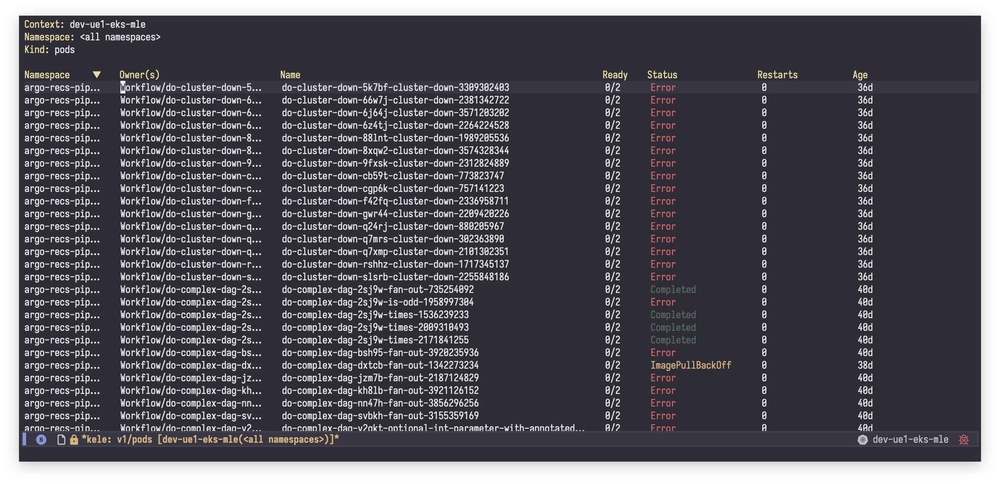
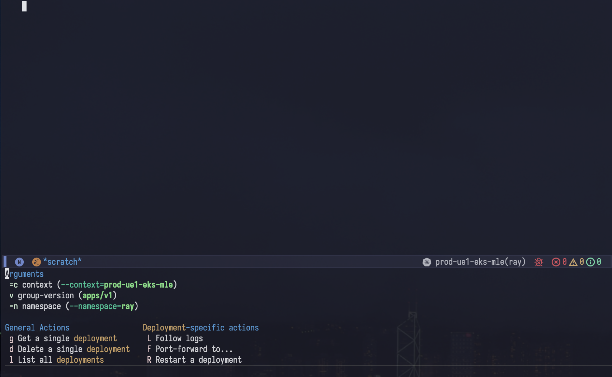
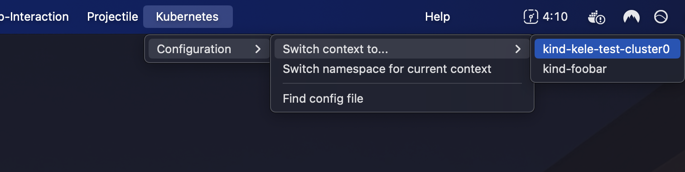
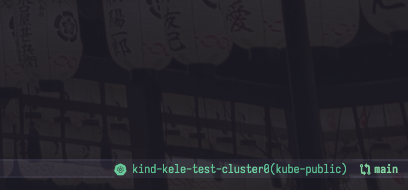

🥤 kele.el (Kubernetes Enablement Layer for Emacs)


Kele (kě lè, or kə-ˈlə) (“Kubernetes Enablement Layer for Emacs”) is a Kubernetes cluster management package. It empowers you to perform operations as coarse or fine-grained as you need, fast, and get back to your work.
With Kele, you can:
- Manage contexts, e.g. switching, renaming, changing the default namespace;
- Display details, follow logs, and manage port-forwards for resources;
- List collections of resources;
- Start and stop proxy servers;
- Use the menu bar to perform basic cluster/config management;
- Add an interactive modeline indicator with
doom-modeline; - And more!

See How-Tos > Usage for more details on what’s possible with Kele.
Tip
To learn more about how Kele compares to some other Kubernetes packages for Emacs, see: Explanations > Comparisons with Similar Packages/Tools.
Note
Kele is not an official Kubernetes project.
Screenshots




Getting Started
Kele requires Emacs 29+.
(use-package kele
:config
(kele-mode 1)
(bind-key (kbd "s-k") kele-command-map kele-mode-map))
By default this will load the package eagerly. This can be useful if you would like modeline integration to be always present. If, instead, you’d like to lazily load the package, try the following, which will only load the package when you invoke the prefix keybinding:
(use-package kele
:config
(kele-mode 1)
:bind-keymap
("s-k" . kele-command-map))
About the Name
The name Kele comes from the Mandarin term for cola, 可乐 (kě lè). It is also an abbreviation of “Kubernetes Enablement Layer for Emacs.”